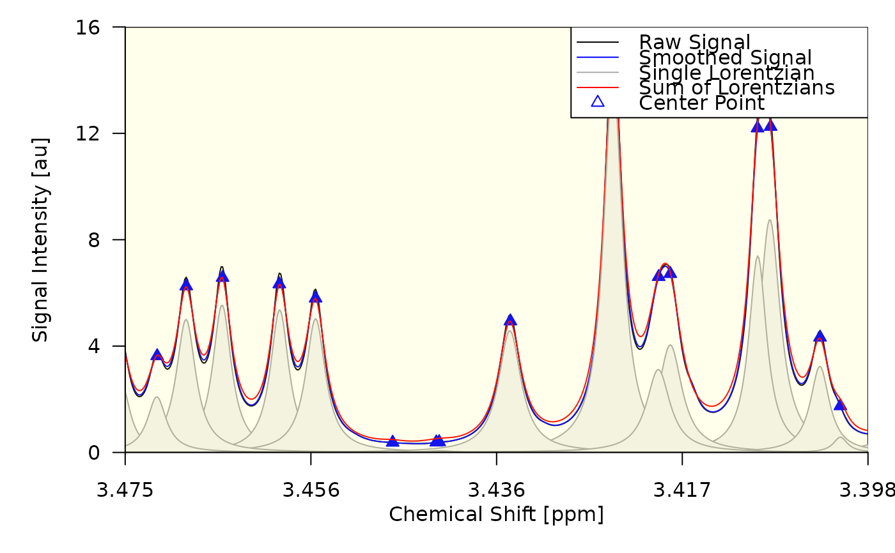
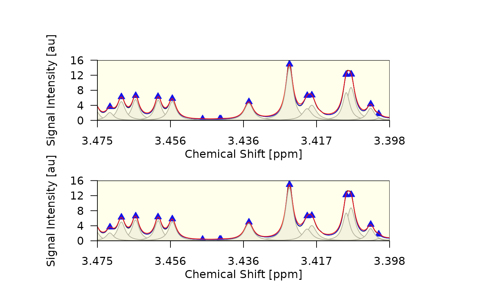
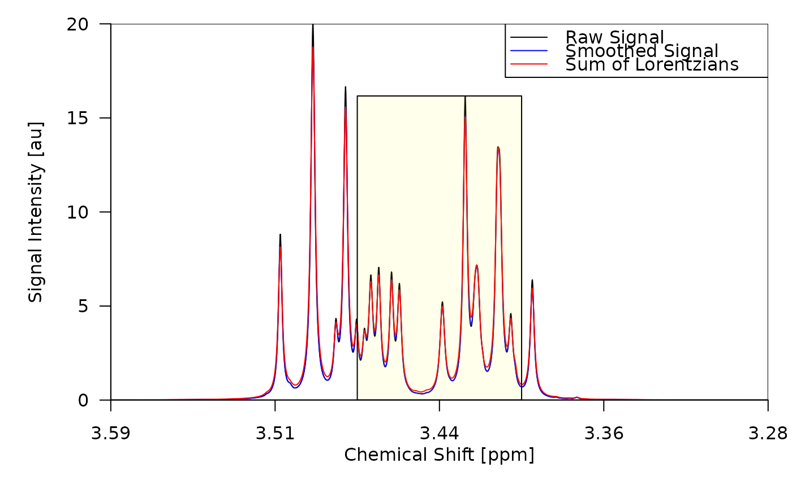
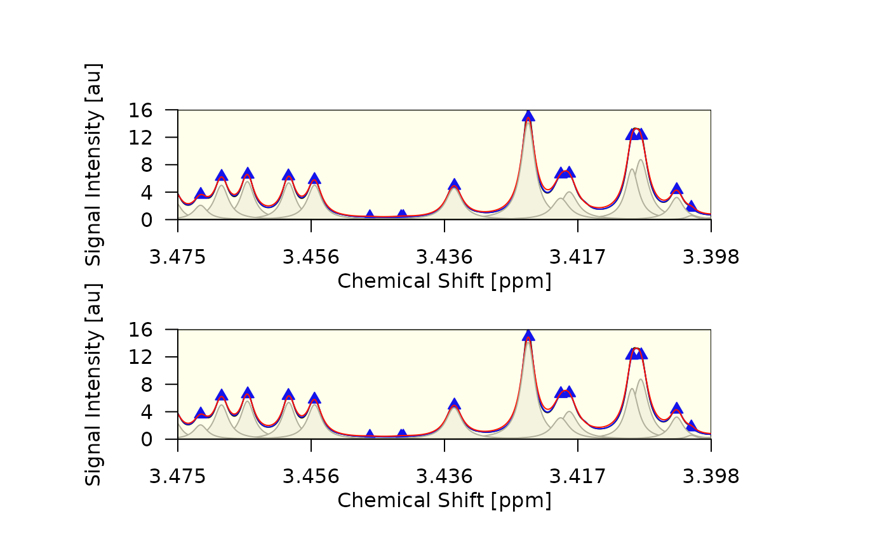
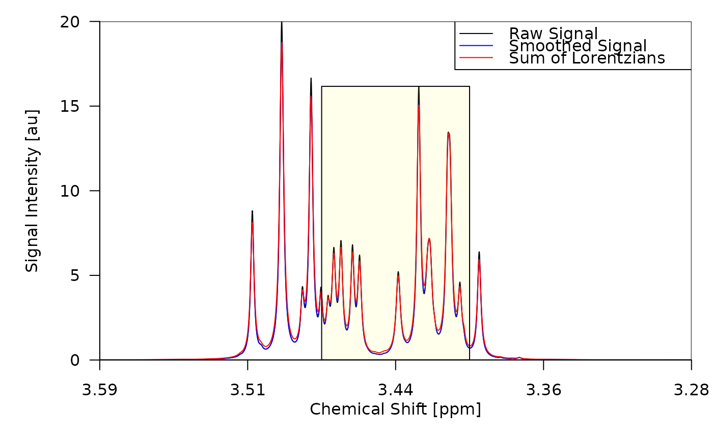

Draws a single spectrum. Internally used by plot_spectrum(), which is
usually the recommended way to plot spectra. For usage examples see
test/testthat/test-draw_spectrum.R.
Usage
draw_spectrum(
obj,
foc_rgn = NULL,
foc_frac = NULL,
foc_only = TRUE,
add = FALSE,
fig_rgn = NULL,
main = NULL,
show = TRUE,
show_d2 = FALSE,
truepar = NULL,
mar = c(4.1, 5.1, 0.1, 0.1),
si_line = list(),
sm_line = list(),
sp_line = list(),
d2_line = list(),
lc_lines = list(),
tp_lines = list(),
cent_pts = list(),
bord_pts = list(),
norm_pts = list(),
bg_rect = list(),
foc_rect = list(),
lc_rects = list(),
tp_rects = list(),
bt_axis = list(),
lt_axis = list(),
tp_axis = list(),
rt_axis = list(),
tp_verts = list(),
lc_verts = list(),
lgd = list()
)Arguments
- obj
An object of type
spectrumordecon2. For details see Metabodecon Classes.- foc_rgn
Numeric vector specifying the start and end of focus region in ppm.
- foc_frac
Numeric vector specifying the start and end of focus region as fraction of the full spectrum width.
- foc_only
Logical. If TRUE, only the focused region is drawn. If FALSE, the full spectrum is drawn.
- add
If TRUE, draw into the currently open figure. If FALSE, start a new figure.
- fig_rgn
Drawing region in normalized device coordinates as vector of the form
c(x1, x2, y1, y2).- main
Main title of the plot. Drawn via
title().- show
Logical. If FALSE, the function returns without doing anything.
- show_d2
Logical. If TRUE, the second derivative of the spectrum is drawn. Setting this to TRUE changes most of the defaults for the drawing, e.g. by disabling the drawing of anything related to signal intensities and by changing the y-axis label to "Second Derivative".
- truepar
Data frame with columns x0, A and lambda containing the true lorentzian that were used to simulate the spectrum. Required if any
tp_*argument is set.- mar
Number of lines below/left-of/above/right-of plot region.
- si_line, sm_line, lc_lines, sp_line, d2_line, tp_lines
List of parameters passed to
lines()when drawing the raw signal intensities, smoothed signal intensities, lorentzian curves found by deconvolution, superposition of lorentzian curves, second derivative and/or true lorentzian curves.- cent_pts, bord_pts, norm_pts
List of parameters passed to
points()when drawing the peak center points, peak border points and non-peak points.- bg_rect, lc_rects, foc_rect, tp_rects
List of parameters passed to
rect()when drawing the background, lorentzian curve substitutes, focus rectangle and/or true lorentzian curve substitutes.- bt_axis, lt_axis, tp_axis, rt_axis
List of parameters used to overwrite the default values passed to
axis()when drawing the bottom, left, top and right axis. In addition to the parameters ofaxis(), the following additional parameters are supported as well:text: Description for the axis. Drawn viamtext().n: Number of tickmarks.digits: Number of digits for rounding the labels. If a vector of numbers is provided, all numbers are tried, untilnunique labels are found. See 'Details'.sf: Scaling factor. Axis values are divided by this number before the labels are calculated. If you set this to anything unequal 1, you should also choosetextin a way that reflects the scaling. E.g. if you setsf = 1e6you could change the text from"Signal Intensity [au]"to"Signal Intensity [Mau]"or"Signal Intensity [au] / 1e6", with"Mau"meaning "Mega-Arbitrary-Units".
- lc_verts, tp_verts
List of parameters passed to
abline()when drawing vertical lines at the centers of estimated lorentzian curves and/or true lorentzian curves. Setting tp_verts$show to TRUE requirestrueparto be set.- lgd
List of parameters passed to
legend()when drawing the legend.
Details
Parameters bt_axis, lt_axis, tp_axis and rt_axis all support option
n and digits, where n = 5 means "Draw 5 tickmarks over the full axis
range" and digits = 3 means "round the label shown beside each tickmark to
3 digits". If n is omitted, a suitable value is chosen automatically using
axTicks(). If digits is omitted, a default of 2:12 is used. Providing a
vector of digits causes each digit to be tried as argument for round(),
until a digit is encountered that results in n unique labels. Example:
Assume we have n = 4 and the corresponding calculated tickmark positions
are: 1.02421, 1.02542, 1.02663 and 1.02784. If we provide digits = 1:5, the
following roundings are tried:
| digit | label 1 | label 2 | label 3 | label 4 |
| 1 | 1 | 1 | 1 | 1 |
| 2 | 1.02 | 1.03 | 1.03 | 1.03 |
| 3 | 1.024 | 1.025 | 1.027 | 1.028 |
| 4 | 1.0242 | 1.0254 | 1.0266 | 1.0278 |
| 5 | 1.02421 | 1.02542 | 1.02663 | 1.02784 |
In the above example the process would stop at digit = 3, because at this
point we have n = 4 unique labels (1.024, 1.025, 1.027 and 1.028).
Examples
decon <- deconvolute(sim[[1]], sfr = c(3.55, 3.35))
draw_spectrum(obj = decon)

#> $plt_rgn_ndc
#> [1] 0.1457143 0.9971429 0.1171429 0.9971429
#>
#> $foc_rgn_ndc
#> [1] 0.9977677 0.1450895 0.1171429 0.9971429
#>
draw_spectrum(obj = decon, lgd = list(x = "top", bg = NA))
 #> $plt_rgn_ndc
#> [1] 0.1457143 0.9971429 0.1171429 0.9971429
#>
#> $foc_rgn_ndc
#> [1] 0.9977677 0.1450895 0.1171429 0.9971429
#>
draw_spectrum(obj = decon, foc_rgn = c(3.45, 3.37))
#> $plt_rgn_ndc
#> [1] 0.1457143 0.9971429 0.1171429 0.9971429
#>
#> $foc_rgn_ndc
#> [1] 0.9982098 0.1446473 0.1171429 0.9971429
#>
draw_spectrum(obj = decon, fig = c(0.1, 0.4, 0.30, 0.45), add = TRUE)
#> $plt_rgn_ndc
#> [1] 0.2457143 0.3971429 0.4171429 0.4471429
#>
#> $foc_rgn_ndc
#> [1] 0.3972540 0.2456032 0.4171429 0.4471429
#>
draw_spectrum(obj = decon, fig = c(0.1, 0.4, 0.05, 0.20), add = FALSE)

#> $plt_rgn_ndc
#> [1] 0.2457143 0.3971429 0.1671429 0.1971429
#>
#> $foc_rgn_ndc
#> [1] 0.3972540 0.2456032 0.1671429 0.1971429
#>
draw_spectrum(obj = decon, lc_lines = NULL, lc_rects = NULL, foc_only = FALSE)

#> $plt_rgn_ndc
#> [1] 0.1457143 0.9971429 0.1171429 0.9971429
#>
#> $foc_rgn_ndc
#> [1] 0.6778571 0.4650000 0.1171429 0.8285104
#>
#> $plt_rgn_ndc
#> [1] 0.1457143 0.9971429 0.1171429 0.9971429
#>
#> $foc_rgn_ndc
#> [1] 0.9977677 0.1450895 0.1171429 0.9971429
#>
draw_spectrum(obj = decon, foc_rgn = c(3.45, 3.37))
#> $plt_rgn_ndc
#> [1] 0.1457143 0.9971429 0.1171429 0.9971429
#>
#> $foc_rgn_ndc
#> [1] 0.9982098 0.1446473 0.1171429 0.9971429
#>
draw_spectrum(obj = decon, fig = c(0.1, 0.4, 0.30, 0.45), add = TRUE)
#> $plt_rgn_ndc
#> [1] 0.2457143 0.3971429 0.4171429 0.4471429
#>
#> $foc_rgn_ndc
#> [1] 0.3972540 0.2456032 0.4171429 0.4471429
#>
draw_spectrum(obj = decon, fig = c(0.1, 0.4, 0.05, 0.20), add = FALSE)

#> $plt_rgn_ndc
#> [1] 0.2457143 0.3971429 0.1671429 0.1971429
#>
#> $foc_rgn_ndc
#> [1] 0.3972540 0.2456032 0.1671429 0.1971429
#>
draw_spectrum(obj = decon, lc_lines = NULL, lc_rects = NULL, foc_only = FALSE)

#> $plt_rgn_ndc
#> [1] 0.1457143 0.9971429 0.1171429 0.9971429
#>
#> $foc_rgn_ndc
#> [1] 0.6778571 0.4650000 0.1171429 0.8285104
#>